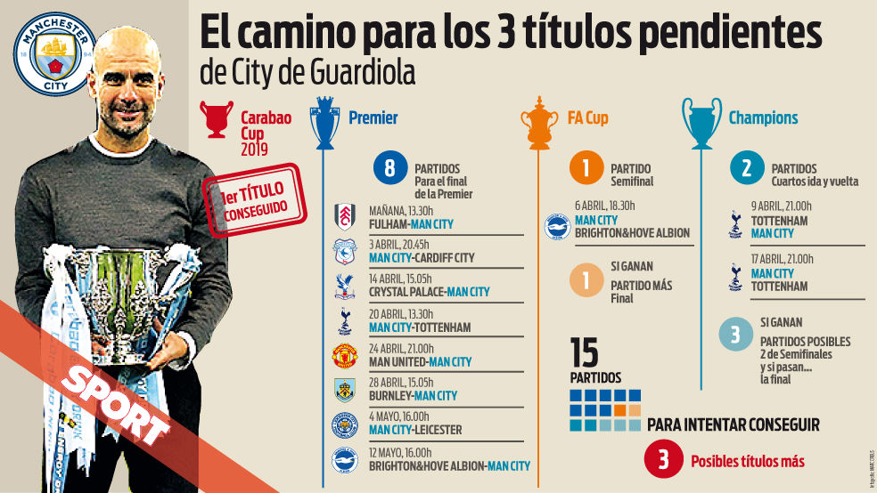

Desde julio de 2016 dirige al Manchester City, con el cual ganó un total de 11 títulos a nivel nacional, incluyendo los bicampeonatos de la Premier League de las temporadas temporada 2017-18, temporada 2018-19, 2020-21 y 2021-2022. Además, se convirtió en el primer entrenador de la historia en lograr el tetracampeonato en el fútbol inglés en un mismo año, tras ganar la FA Cup, la Community Shield, la Copa de la Liga y la Premier League, en la temporada 2018-19.14 Hizo historia con el club cityzen al clasificarlo por primera vez a una final de Champions League, la cual perdió frente al Chelsea.
Desde la llegada de los nuevos dueños, el club ha obtenido un total de 17 títulos oficiales, entre los que se destacan seis Premier League (2012, 2014, 2018, 2019, 2021 y 2022), y disputó por primera vez una final de la Liga de Campeones de la UEFA, en 2021, dónde perdería por 1-0 ante el Chelsea F. C. En 2019, ganó cuatro trofeos, completando una barrida sin precedentes de todos los trofeos domésticos en Inglaterra y convirtiéndose en el primer equipo masculino inglés en ganar el triplete doméstico
